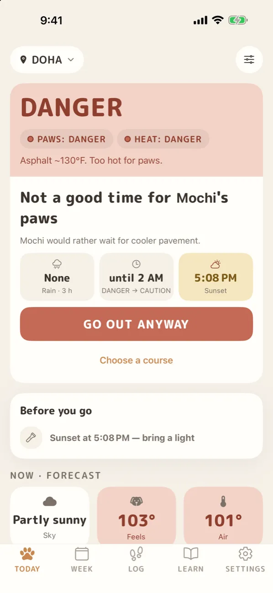
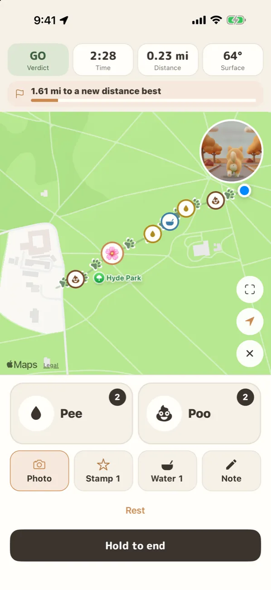
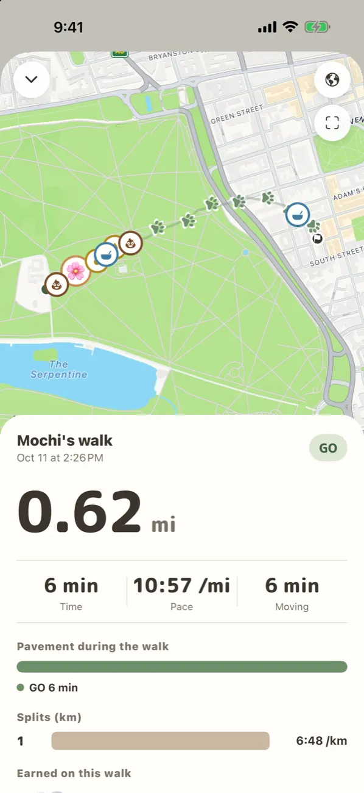
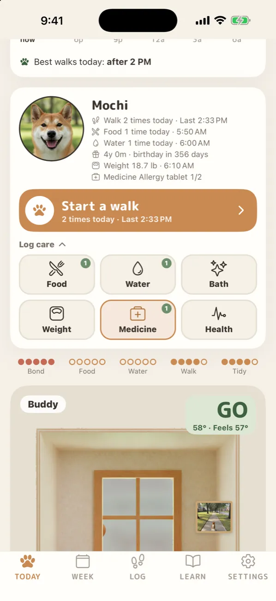
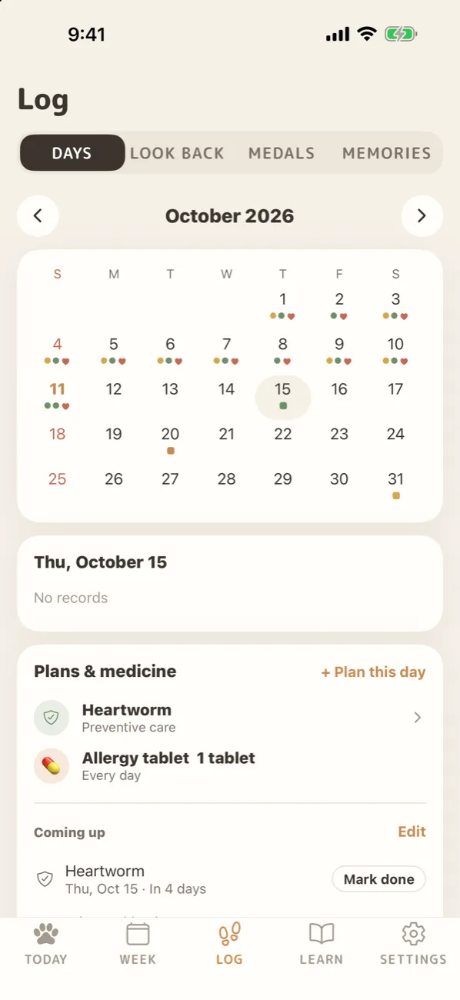
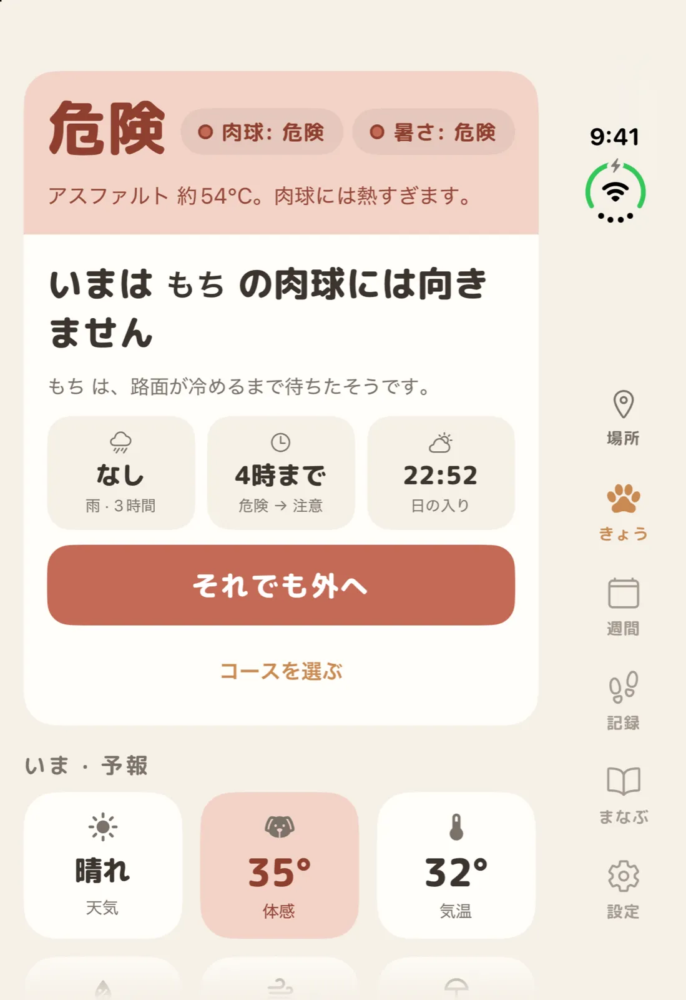

Dog walks × weather × pavement heat
The air temperature is lying to you.
On a 77°F sunny day, asphalt can reach about 125°F — hot enough to burn paw pads in a minute. Paw Weather estimates the pavement from your forecast and gives you one word before the walk: GO, CAUTION or DANGER.
iPhone · English and Japanese · no account

Quick answers
How hot is too hot to walk a dog?
Taken from the app’s Learn articles and the thresholds its verdict uses. Figures are for an average adult dog.
About 60 seconds of contact injures skin. Paw Weather says DANGER from here and CAUTION from 110°F.
Published spot measurements. Concrete runs 14–25°F cooler — but still burns in midsummer.
Heat index combines temperature and humidity. Flat-faced breeds, puppies, seniors and dark coats get stricter limits.
Pavement cools overnight. After sunset, asphalt was still 6.8°F above the air on average 3.7 hours later.
The curve
Asphalt runs hotter than the forecast.
Clear sky, the day’s hottest hour, from Paw Weather’s own engine — stored heat included, the way the app does. Asphalt hits 125°F on a 76°F day. Concrete runs 14–25°F cooler — often that is the whole answer.
The 7-second rule: back of your hand, seven seconds.
Can’t hold it? Your dog shouldn’t walk on it. Paw pads burn at about the same temperature as human skin.
Pavement numbers are estimates — surface age, colour, wind and shade move the real number by 10°F or more. Your hand has the final say.
Screens
From the verdict to every walk you take together.




← scroll sideways →
Foldable iPhone
On iPhone Duo, open it for the details. From 1.5.4
Folded, it is the screen you know. Unfolded, the right side stays exactly as the folded screen, and the left fills with detail — the next 18 hours, rain for the next 60 minutes. During a walk, the sidebar on the hinge widens the map to one big pane.



iPhone Duo screens are shown with the Japanese interface.
How it works
Two dangers, judged separately.
Hot pavement (paw burns) and heat (heatstroke) are different dangers with different answers. Paw Weather judges each one and shows you the worse of the two, so the reason you see is the reason that matters.
| What it checks | Caution | Danger |
|---|---|---|
| Paws — estimated pavement | 110°F+ | 125°F+ |
| Body — heat index | 80°F+ | 90°F+ |
| Air temperature itself | — | 100°F+ |
Puppies get pavement limits 5°F stricter. Heat limits are stricter for flat-faced breeds (−6°F), puppies and seniors (−4°F) and a dark coat in direct sun (−3°F), 10°F stricter at most.
Winter: ice, road salt and cold
On clear, calm nights shaded pavement freezes before the air does. Feels-like (wind chill) below 32°F is CAUTION and below 15°F is DANGER — stricter for small, short-coated, young and senior dogs, with more room for double-coated breeds.
Where the weather comes from
The National Weather Service in the United States, MET Norway everywhere else. Rain for the next 60 minutes during a walk comes from Apple Weather. Pavement temperature is an estimate from sun angle, cloud cover and the heat the pavement has stored.
Features
What Paw Weather does
Pavement and verdict
Estimated asphalt and concrete temperature, paws and heat judged separately.
The next 18 hours
An hour-by-hour bar showing the good walk windows.
Winter warnings
Ice, road salt conditions and frostbite risk — plus a reminder to wipe paws.
Fitted to your dog
Breed, age, coat colour and thickness move the thresholds.
Walk and care log
Routes, pee and poop, photos; meals, water, weight, medicine, condition.
Rain by the minuteFrom 1.5.4
During a walk only, the next hour’s rain from Apple Weather.
Moves with iCloudFrom 1.5.4
Records and photos follow you to a new iPhone on the same Apple Account.
Learn
The 7-second rule, paw burns, heatstroke and winter walks.
The 7-day walk planner, morning alerts and some other features are part of Paw Weather Pro (in-app purchase). See the app and the App Store for details.
FAQ
Questions dog owners ask
How hot is too hot for a dog's paws on pavement?
At about 125°F, pavement can injure a dog's paw pads in about 60 seconds of contact. For an average adult dog, Paw Weather says CAUTION from 110°F pavement and DANGER from 125°F. Puppies get thresholds 5°F stricter because their pads are thinner.
At what air temperature is asphalt too hot for dogs?
On a clear day, Paw Weather's model puts asphalt at 125°F when the air is about 76°F, at the hottest hour of the day. Published spot measurements put asphalt near 125°F at 77°F air. A concrete sidewalk runs 14–25°F cooler than asphalt in the same sun.
What is the 7-second rule for dog walks?
Press the back of your hand on the pavement for seven seconds. If you can't hold it there, it is too hot for your dog's paws. Paw pads burn at about the same temperature as human skin. The app's pavement numbers are estimates, so your hand has the final say.
When is it too hot to walk a dog because of heatstroke?
Paw Weather judges heatstroke risk on the heat index, which combines temperature and humidity. For an average adult dog it says CAUTION from a heat index of 80°F and DANGER from 90°F. It is stricter for flat-faced breeds, puppies, seniors and dark coats in direct sun. Air at 100°F or above is DANGER regardless of humidity.
Is it safe to walk my dog after sunset in summer?
Not automatically. Asphalt stores heat. Checked against 16 Arizona DOT roadway sensors about 3.7 hours after sunset, the pavement was still 6.8°F above the air on average, and up to 10.1°F. Paw Weather carries that stored heat forward hour by hour when it suggests walk times.
What should I watch for on winter dog walks?
On clear, calm nights shaded pavement can freeze while the air is still above freezing. Road salt dries and cracks paw pads and makes dogs sick if they lick it off, so wipe your dog's paws after every walk. Paw Weather warns about ice, road salt conditions and frostbite risk, and adjusts for your dog's size and coat.
Does Paw Weather work outside the United States?
Yes. In the United States the forecast comes from the National Weather Service; everywhere else from MET Norway. Minute-by-minute rain during a walk comes from Apple Weather. The app is in English and Japanese and shows °F or °C.
General safety information, not veterinary advice. If your dog shows signs of a paw burn, heatstroke or frostbite, contact a veterinarian right away.
Guides